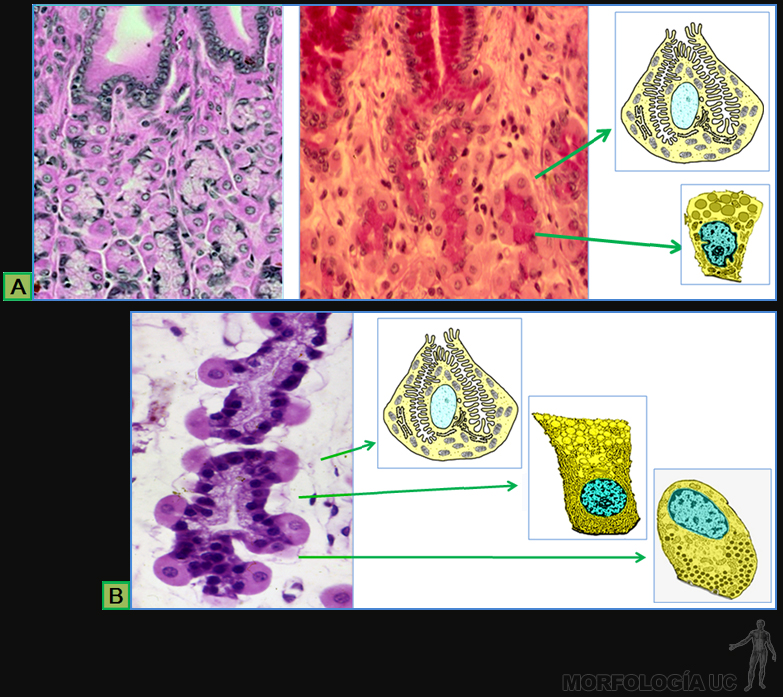

Aparato Digestivo
-
Fig. 7-1: Esquema que las distancias relativas en el tracto digestivo.
Por ejemplo, la distancia desde los incisivos hasta el cardias es de 40 cm; la distancia desde el ano hasta la porción inicial del recto es de 15 cm.
-
Fig. 7-2: Esquema de la cavidad oral y de las glándulas salivales mayores.
- 1= vestíbulo oral;
- 2= paladar duro;
- 3= paladar blando;
- 4= pilar palatofaringeo;
- 5= pilar palatogloso;
- 6= tonsila palatina;
- 7= orofaringe;
- 8= lengua;
- 9= úvula;
- 10= conducto parotídeo;
- 11= glándula parótida;
- 12= glándula submandibular;
- 13= conducto submandibular;
- 14= glándula sublingual.
-
Fig. 7-3: Foto de un corte sagital de cabeza que muestra la cavidad oral y las fosas nasales.
- 1= paladar duro;
- 2= paladar blando;
- 3= región del piso de la boca;
- 4= orofaringe;
- 5= laringofaringe;
- 6= nasofaringe;
- 7= vestíbulo oral superior;
- 8= vestíbulo oral inferior;
- 9= flecha que apunta a la coana;
- 10= cavidad oral;
- 11= lengua;
- ls= labio superior;
- li= labio inferior.
-
Fig. 7-4: Esquema que muestra las denticiones temporal (izquierda) y permanente (derecha).
- 1= primeros molares;
- 2= caninos;
- 3= incisivos centrales;
- 4= primeros premolares.
-
Fig. 7-5A: Foto de una disección de la región cervical.
Cabeza de flecha roja= apunta hacia el hiato submandibular, zona de comunicación entre el espacio paralingual y el triángulo submandibular.- 1= vena facial;
- 2= tronco tirolinguofacial;
- 3= vena yugular interna;
- 4= ramo marginal del nervio facial;
- 5= nervio hipogloso;
- sm= glándula submandibular;
- dg= músculo digástrico;
- m= músculo milohioideo;
- l= linfonodo cervical profundo;
- l*= linfonodos submandibulares.
-
Fig. 7-5B: Foto de una disección de la cara.
- 1= parótida accesoria;
- 2= conducto parotídeo;
- 3= rama bucal nervio facial;
- 4= vena facial;
- 5= arteria facial;
- 6= glándula submandibular;
- 7= músculo depresor del ángulo oral;
- 8= músculo cigomático mayor;
- p= glándula parótida;
- m= músculo masetero.
-

Fig. 7-6: Foto de una disección de cuello que muestra el aspecto posterior de la faringe.
- 1= músculo constrictor superior de la faringe;
- 2= músculo constrictor medio de la faringe;
- 3= músculo constrictor inferior de la faringe;
- 4= músculo estilo faríngeo;
- 5= fascia faringobasilar;
- h= hueso hioides.
-
Fig. 7-7: Foto de una disección de faringe, abierta por su pared posterior.
La línea punteada delimita el aditus laríngeo; la punta de flecha señala la vallécula.
- 1= coanas;
- 2= paladar blando;
- 3= úvula;
- 4= base de la lengua;
- 5= receso piriforme;
- 6= tonsila lingual;
- 7= epiglotis;
- 8= papila circunvalada;
- 9= pliegue y músculo palatofaringeo;
- nf= nasofaringe;
- of= orofaringe;
- lf= laringofaringe.
-
Fig. 7-8: Esquema que muestra la disposición de la faringe del esófago.
- 1= cartílago cricoides;
- 2= constricción cricoidea;
- 3= constricción aórtica;
- 4= arco aórtico;
- 5= constricción bronquial;
- 6= constricción diafragmática;
- 7= orofaringe;
- 8= lengua;
- 10= cavidad nasal;
- 11= nasofaringe;
- 12= paladar blando (velo del paladar);
- 13= laringofaringe;
- 14= hioides;
- 15= laringe;
- 16= esófago;
- 17= tráquea;
- 18= cartílago tiroides.
-
Fig. 7-9: Esquema que muestra la disposición de las vísceras abdominales.
- 1= fondo gástrico;
- 2= cardias;
- 3= cuerpo gástrico;
- 4= curvatura mayor;
- 5= curvatura menor;
- 6= píloro;
- 7= antro pilórico;
- 8= colon transverso;
- 9= colon descendente;
- 10= yeyuno;
- 11= colédoco;
- 12= duodeno;
- 13= páncreas;
- 15= íleon;
- 16= colon ascendente;
- 17= ciego;
- 18= apéndice cecal;
- 19= recto;
- 20= ano;
- 21= colon sigmoide.
-
Fig. 7-10: Esquema que muestra la división en cuadrantes dela pared abdominal y la proyección de las vísceras digestivas.
- 1= líneamedio clavicular;
- 3= plano subcostal;
- 4= plano Intertubercular;
- 5= hipocondrio derecho;
- 6= epigastrio;
- 7= hipocondrio izquierdo;
- 8= flanco derecho;
- 9= región umbilical;
- 10= flanco izquierdo;
- 11= región inguinal derecha;
- 12= hipogastrio;
- 13= región inguinal izquierda.
-
Fig. 7-10b: Fotografía de una disección de abdomen.
- 1= cabeza del páncreas;
- 2= cuello del páncreas;
- 3= cuerpo del páncreas;
- 4= cola del páncreas;
- 5= vena esplénica;
- d1, d2 y d3= primera, segunda y tercera porción del duodeno respectivamente;
- a= arteria mesentérica superior;
- ae= arteria esplénica;
- ar= arteria renal;
- e= estómago;
- r= riñón izquierdo;
- v= vena mesentérica superior;
- ye= yeyuno;
- *= ángulo duodenoyeyunal (de Treitz).
-
Fig. 7-10c: Fotografía de la disección de los vasos del mesenterio.
Los puntos rojos delimitan la arcada vascular desde donde surgen los vasos rectos marcados con los puntos azules.
- 1= arteria mesentérica superior;
- 2= yeyuno;
- 3= vena mesentérica superior.
-
Fig. 7-10d: Fotografía de la disección de los vasos del mesenterio.
Los puntos rojos delimitan las arcadas vasculares del ileon; los puntos azules marcan los vasos rectos.
- 1= rama ileal de la arteria mesentérica superior;
- 2= rama ileal de la vena mesentérica superior;
- 3= ileon.
-
Fig. 7-10e: Fotografía de la sección de la pared de yeyuno (1) y del ileon (2). Además de las diferencias en el calibre de estas porciones y del grosor de la pared (*), se observa a nivel de ileon una mucosa pliegues más altos y más numerosos.
-

Fig. 7-11: Esquema del hígado y la vía biliar.
- 1= vena cava inferior;
- 2= lóbulo anatómico derecho;
- 3= lóbulo anatómico izquierdo;
- 4= ligamento redondo;
- 5= vesícula biliar;
- 6= lóbulo caudado;
- 7= área desnuda;
- 8= arteria hepática propia;
- 9= venas hepáticas derecha e izquierda;
- 10= lóbulo cuadrado;
- 11= conductos hepáticos derecho e izquierdo;
- 12= conducto hepático común;
- 13= conducto cístico;
- 14= conducto colédoco;
- 15= vena porta hepática;
- 16= vena mesentérica superior;
- 17= conducto pancreático principal;
- 18= ampolla hepatopancreática;
- 19= vena mesentérica inferior;
- 20= vena esplénica.
-
Fig. 7-12: Esquema de la circulación portal.
- 1= vena cava inferior;
- 2= diafragma;
- 3= anastomosisporto sistémicas;
- 4= hígado;
- 5 venas hepáticas;
- 6= vena porta hepática;
- 7= estómago;
- 8= vena esplénica;
- 9= vena gastroomental izquierda;
- 10= bazo;
- 11= venas pancreáticas;
- 12= páncreas;
- 13= intestino delgado;
- 14= vena mesentérica superior;
- 15= vena mesentérica inferior;
- 16= vena iliaca común;
- 17= vena rectal superior;
- 18= colon descendente;
- 19= recto.
-
Fig. 7-13: Esquema de la cavidad peritoneal.
- 1= peritoneo parietal;
- 2= área desnuda hígado;
- 3= área peritonizada del hígado;
- 4= omento menor;
- 5= omento mayor;
- 6= saco mayor del peritoneo;
- 7= estomago;
- 8= riñón;
- 9= bazo;
- 10= páncreas;
- 11= mesocolon transverso;
- 12= mesenterio;
- 13= intestino delgado;
- 14= mesocolon sigmoide;
- 15= fondo de saco recto uterino;
- 16= útero;
- 17= recto;
- 18= fondo de saco útero vesical;
- 19= vejiga.
-
Fig. 7-14: MO de cortes por lengua, teñidos con HE.
- A) Imagen de corte transversal por la lengua;
- B) superficie dorsal rica en papilas filiformes;
- C) papila caliciforme en cuyo epitelio estratificado se ubican corpúsculos gustativos.
-
Fig. 7-15:
- A) Esquema que muestra en corte transversal, la organización general de la pared del tubo digestivo. En: zona 1 es estómago, zona 2 es duodeno, zona 3 es intestino delgado y zona 4 es intestino grueso;
- B) MO de células ganglionares del plexo submucoso (de Meissner) y del plexo mientérico (de Auerbach), tinción HE.
-
Fig. 7-16: MO de cortes por la pared del esófago, tinción HE.
- A) a bajo aumento, se observan las dos capas de la muscular externa, la submucosa y la mucosa;
- B) a mayor aumento, destaca la mucosa y la submucosa con glándulas secretoras de mucus, cuyo conducto excretor atraviesa la mucosa.
-
Fig. 7-17: MO de cortes por la pared del estómago, tinción HE.
- A) a bajo aumento, se ven tres capas de la muscular externa, la submucosa y la mucosa;
- B) fovéolas gástricas cubiertas por su epitelio cilíndrico monoestratificado, junto un corte teñido con PAS en que el mucus de las células del epitelio de revestimiento, se tiñen intensamente en rojo.
-
Fig. 7-18: MO de la mucosa de las tres zonas de la pared del estómago, tinción HE.
- A) región cardial;
- B) región pilórica;
- C) región fúndica.
-

Fig. 7-19: MO de cortes por glándulas fúndicas.
- A) dos zonas del cuello, una con tinción HE, y la otra con tinción de PAS con las células mucosas del cuello color rojo suave. En los dibujos se muestra la estructura de células parietales y mucosas del cuello;
- B) zona de la base de las glándulas, tinción con HE. Los dibujos junto a ella muestran la estructura de células parietales, cimógenas y entero-endocrinas.
-
Fig. 7-20: MO de cortes por yeyuno.
- A) corte longitudinal que muestra su pared completa y que destacan los pliegues circulares, tinción HE;
- B) Epitelio de revestimiento de una vellosidad intestinal en el cuál, entre las células de absorción, se ubican células caliciformes de color rojo, tinción PAS;
- C) zona de criptas de Lieberkühn en que destacan las células de Paneth que al teñir con HE, se tiñen intensamente con la eosina.
-
Fig. 7-21: MO de cortes de la mucosa y submucosa de las siguientes zonas del intestino delgado, teñidos con HE.
- A) íleon en que destacan los acúmulos de tejido linfático que atraviesan la muscular de la mucosa;
- B) duodeno en que las glándulas de Brunner, ocupan parte de la submucosa.
-
Fig. 7-22: MO de cortes por intestino grueso, tinción HE.
- A) corte a bajo aumento a lo largo de su pared completa;
- B) corte por la capa mucosa en que se distingue el epitelio de revestimiento, las criptas de Lieberkhun, y la muscular de la mucosa.
-
Fig. 7-23:
- A) MO de corte por un lobulillo de la glándula salival submandibular, tinción HE. Se indican con flechas: conducto estriado= verde, conducto intercalar= negra, acino seroso= morada, túbulo mucosa= rojo;
- B) Esquema de la estructura básica de la porción secretora y conductos intralobulillares.
-
Fig. 7-24:
- A) MO a bajo aumento de corte por lobulillos del páncreas, tinción HE. Se indican los islotes de Langerhans (flechas negras) y los conductos excretores extralobulillares (flechas azules);
- B) a mayor aumento, se distingue un conducto excretor intralobulillar (cabeza de flecha verde) y acinos serosos con células centroacinares (flecha verde);
- C) Esquema de la relación de las célula serosas acinares con las células centroacinares.
-
Fig. 7-25:
- A) Esquema que muestra la organización básica del lobulillo hepático clásico: espacios portales con ramas de arteria hepática (rojo), vena porta (purpura) y conducto biliar (verde), espacios portales terminales desde donde nacen los sinusoides (rosado), que fluyen entre las láminas de hepatocitos y se vician en el nacimiento de ramas de la vena hepática (azul);
- B) MO de cortes por hígado, teñidos con HE que muestran un corte transversal por: un espacio portal, y una vena hepática terminal (vena central del lobulillo clásico);
- C) MO de láminas de hepatocitos separadas por sinusoides, tinción HE, y;
- D) dibujo que muestra la estructura de los hepatocitos ubicados en la láminas epitelial y su relación con los sinusoide adyacentes, tal como se ve al MET.
-
Fig. 7-26:
- A) Esquema que muestra la conexión de los canalículos biliares con los conductos biliares ubicados en los espacios porta terminales;
- B) MO de un corte transversal por: un canal portal terminal, que contiene un colangiolo, y un conducto biliar (flecha verde), y la conexión de la porta, con un sinusoide (flecha púrpura);
- C) Esquema de la estructura del acino hepático en cuyo centro, se ubican los canales portales terminales, y en su periferia, las venas hepáticas terminales con los hepatocitos en tres zonas concéntricas.